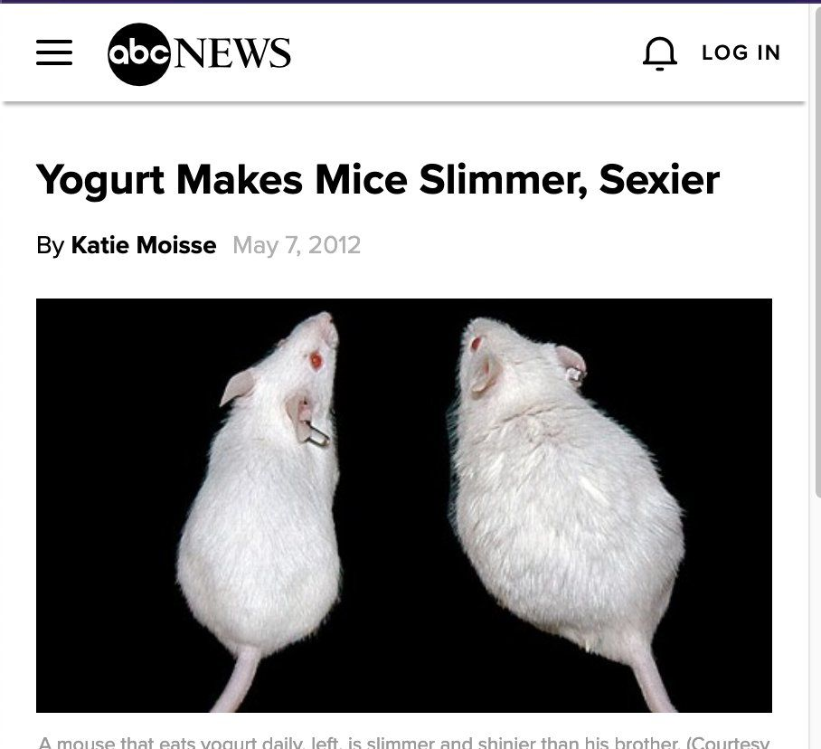

sdgsd asfasfsafasfas adfasfa wooooooooooooooooooooooooooooooooooooooooooooooooooooooooooooooooooooooooooooooooooooo ooooooooooooooooooooooooooooooooooooooooooooooooooo, FLIP YEASFGSDGSDGSDGX

look at this cool image, yoghurt is terrible but the mice are cool and adorable. Not as good as rats but close.
I fricking hate yoghurt, like, it literally has the word "hurt" in it. 0/10 whoever invented that stuff was definitely
into having some weird stuff. Like, did you realise that yoghurt has living bacteria in it? like wtf, why would you eat that??
there are scientists that trained the bacteria in yoghurt to work together to make noises and they made the yoghurt speak
thats flipping awful and I hate it